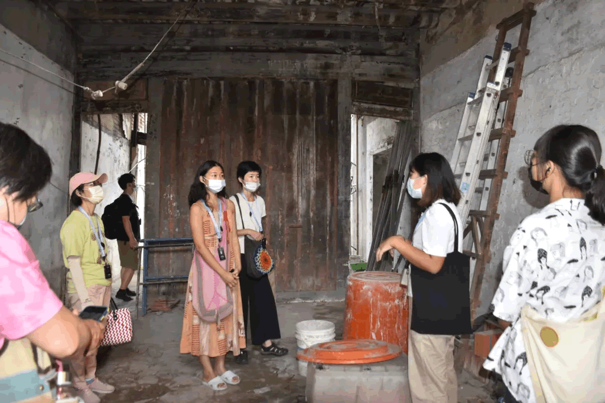
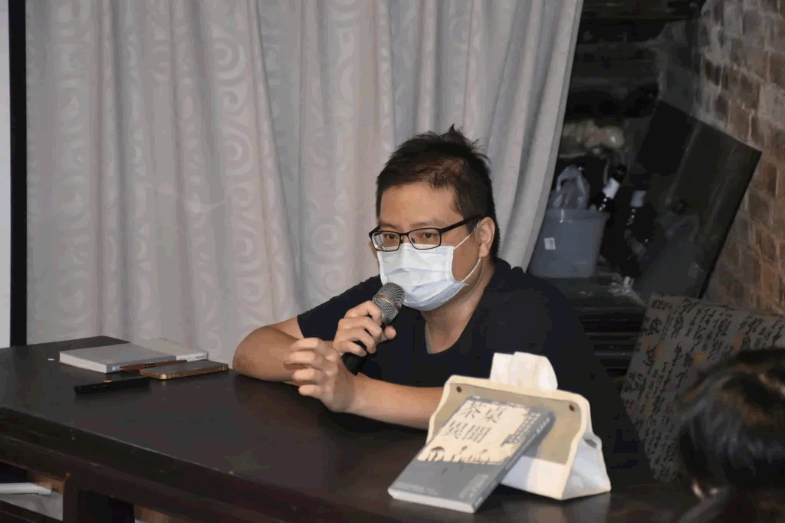
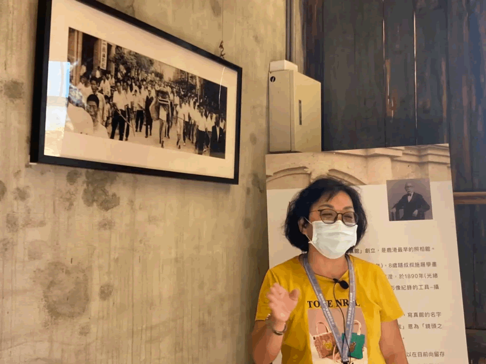
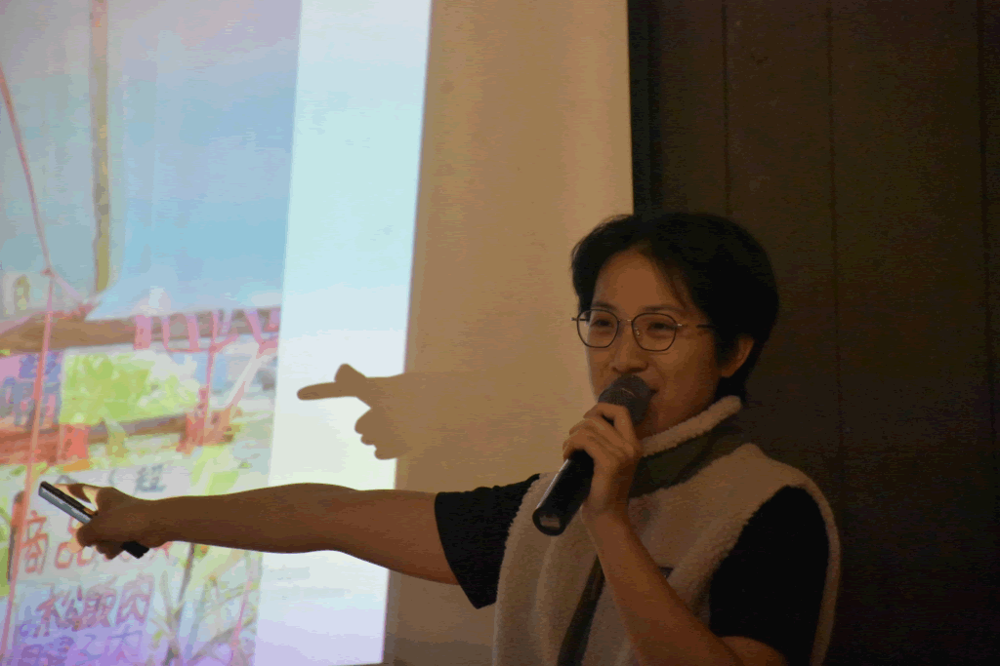
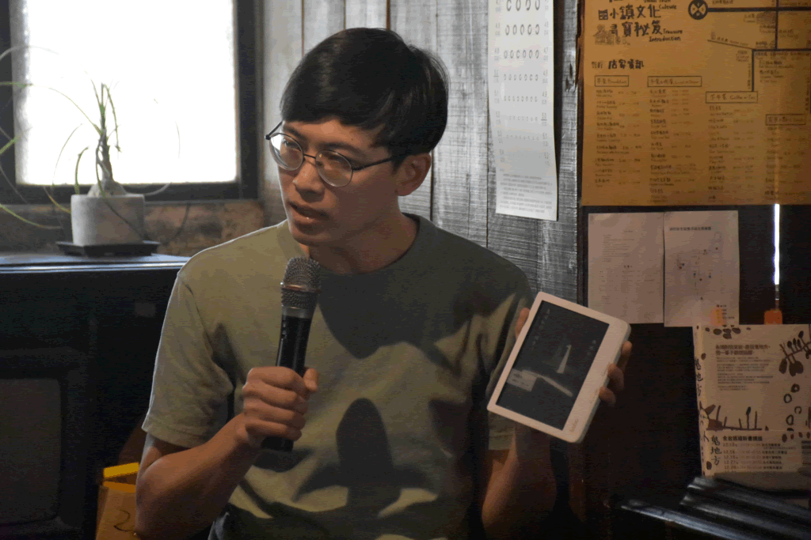

著鹿讀書會
讀書會將不定期以臺灣的地方故事為主題選書，
透過不同地區、不同作家的角度
來認識地方與土地上的故事。
讀書會形勢將以導讀分享與彼此交流為進行的方式，
期待透過讀書會，看見在相同文字裡，
大家所看見的不同視野。
而在讀書會外，
也將募集對於書寫在地故事有興趣的夥伴們
一起加入地方刊物的撰寫，
讓腦中的故事透過刊物送達更多人的手中！
著鹿讀書會紀錄 |
|
✦✦✦ 活動日期✦✦✦ 09/25（日） ✦✦✦ 活動時間✦✦✦ 14:00-17:00 ✦✦✦ 活動地點✦✦✦ 鹿港茉莉人文環境教育中心（彰化縣鹿港鎮金盛巷23號） ✦✦✦ 活動行程 ✦✦✦ 《行過洛津》共讀與分享（14:00-16:00 ） 14:00-15:00 文本共讀 15:00-16:00 分享與交流 《走讀洛津》故事地景走訪（16:00-17:00 ） |
9/25《行過洛津》施叔青 著  |
10/30《茶桌異聞》殺豬的牛二 著  |
《茶桌異聞：從送肉粽到紅眠床34則鹿港怪談紀實》 ✦✦✦ 活動日期✦✦✦ 10/30（日） ✦✦✦ 活動時間✦✦✦ 14:00-16:00 ✦✦✦ 活動地點✦✦✦ 鹿港茉莉人文環境教育中心（彰化縣鹿港鎮金盛巷23號） ✦✦✦ 活動行程 ✦✦✦ 《茶桌異聞》作家共讀與分享（14:00-15:00 ） 《走讀鹿港怪談》（15:00-16:00 ） ✦✦✦ 作者—殺豬的牛二 ✦✦✦ |
｜著鹿讀書會《二我影像 老照片見證家族史》｜ ✦✦✦ 作者—陳淑美 ✦✦✦ |
11/13《二我影像 老照片見證家族史》陳淑美 著  |
2/19《菜場搜神記》蘇凌著  |
｜著鹿讀書會《菜場搜神記》｜ |
｜何處為鄉｜ |
3/5《鬼地方》陳思宏 著  |
聯絡我們： |
小鎮文化團隊： |
地址：鹿港鎮郭厝巷32-1號
|
小鎮資產管理有限公司
|
小艾人文背包客棧
|
北頭娛椿共同實驗空間
|